갑옷 입은 핑크리본 새끼고양이가 셀카로 우유를 마시다 컵을 던지고 폰을 내던지자, 풀밭에 옆으로 떨어진 폰 시점으로 거대한 붉은 용이 깨어나 포효하는 장면이 찍히며 끝나는 15초 클리프행어.
| 화면 비율/해상도 | 9:16 · 1080x1920 · 30fps |
|---|---|
| 화면 방향 트릭 | 2번째 생성 클립(5.73~15.23s)은 가로 16:9 영상을 시계방향 90도 회전(ffmpeg transpose=1)해 9:16을 채움 → 땅이 화면 왼쪽, 하늘이 오른쪽. '폰이 풀밭에 옆으로 떨어져 계속 녹화 중'이라는 디제틱 설정이라 어색하지 않고 오히려 파운드푸티지 리얼리티를 줌. 워터마크는 회전 후 얹혀 똑바로 보임. 참고: 원본은 24fps 소스를 30fps로 변환(5프레임마다 중복 프레임). |
| 워터마크 | 'sickmanai' 소문자 모노스페이스, 우하단 x≈79~98%, y≈94~96%(글자 높이 프레임의 약 1.3%), 흰색 약 60% 불투명. 0.00~9.85s까지만 표시되고 9.87s부터 사라짐(오버레이 길이가 약 9.87s). |
| 화면 문구/자막 | 없음 (자막/문구 없음, 워터마크만) |
| 원본 캡션 | 🐱⚔🐉 Inspired by: @kaye.creatives & @brshdsk Comment "prompt" for the guide. |
첫 프레임부터 '갑옷 입은 핑크리본 새끼고양이가 셀카 브이로그처럼 아이스 우유를 빨대로 마심' — 귀여움+기사 코스튬+일상 셀카 포맷의 부조화가 즉시 정지를 유발. 동시에 고양이 눈이 계속 화면 오른쪽 밖을 흘끗거려 '저기 뭐가 있지?' 호기심 갭을 심음.
| Setup 0.00-3.30s | 평화로운 안개 황야에서 셀카 찍으며 우유 마시는 귀여운 기사 고양이. 시선은 오른쪽을 경계. |
|---|---|
| Inciting 3.30-5.53s | 컵을 던지고 칼자루에 손, 진지한 눈빛 → '이제 싸운다' 결심. 폰을 내던짐. |
| Escalation 5.53-10.80s | 암전 후 떨어진 폰 시점으로 잠든 거대 용 리빌, 고양이가 칼을 뽑고(9.40), 용이 눈을 뜸(10.5). |
| Climax 10.80-14.00s | 용이 머리를 들어 솟구치고 13.0s 입을 쩍 벌려 포효. |
| Payoff 14.00-15.23s | 풍압에 폰이 밀려나며 날개 편 용 전체가 드러남 → 결말 없이 포효 도중 끝(Part 2 유도 클리프행어). |
캡션 'Comment "prompt" for the guide.' — 키워드 댓글 시 가이드를 보내주는 구조(DM 자동화 추정). 영상 자체는 '고양이 이길까?' '2편 언제?' 류 반응을 부르는 미해결 결말.
심리스 루프 아님. 포효 최고조에서 끊는 클리프행어형. 다만 마지막 장면(시끄럽고 넓은 용)과 첫 장면(조용하고 귀여운 셀카)의 강한 대비 때문에 자동 재생 시 '다시 처음부터 복선 확인' 재시청이 발생.
| Selfie POV / vlog framing | 셀카 1인칭 브이로그 구도 @ 0.00-5.53s |
|---|---|
| Eyeline tease (off-screen look) | 화면 밖 시선으로 궁금증 유발 @ 0.5-5.3s |
| Whip / motion-blur throw | 폰 던지는 휙 블러 전환 @ 5.37-5.53s |
| Smash to black (dip to black) | 순간 암전 @ 5.53-5.73s |
| Found-footage phone drop | 떨어진 폰이 계속 찍는 파운드푸티지 @ 5.73-15.23s |
| 90-degree rotated frame (camera roll) | 90도 회전 화면(옆으로 누운 폰) @ 5.73-15.23s |
| Camera tumble / roll | 카메라 굴림 @ 5.73-7.10s |
| Locked-off reveal | 고정 카메라 리빌 @ 7.10-13.50s |
| Scale contrast | 크기 대비 @ 7.10-15.23s |
| Pull-back (dolly out) on roar | 포효 풍압으로 뒤로 밀리는 풀백 @ 13.50-15.23s |
| Cliffhanger end cut | 클리프행어 컷 @ 15.23s |
| 24p to 30p pulldown | 24fps→30fps 중복 프레임 변환 @ 전체 |
[character_sheet_en] a tiny fluffy golden British Shorthair kitten (about 10 weeks old) with cream-gold chinchilla-tipped fur, white muzzle and fluffy white chest ruff, long white whiskers, round chubby face, huge round dark eyes with a blue-grey sheen, small pink nose, a pink satin ribbon bow tied at the base of its right ear (viewer's left), wearing full polished silver medieval plate armor with engraved scroll filigree and a fleur-de-lis on the breastplate, layered rounded pauldrons, chainmail sleeves, a cream-white wool cape draped over its shoulders and down its back, a brown leather sword belt and a short arming sword with a round silver pommel sheathed at its left hip; it stands upright like a small knight, real kitten head and fluffy real cat paws. Proportions: head about 45% of total visible body height, compact armored torso, short arms ending in fluffy cream cat paws with pink toe beans; ears upright with pale pink inner fur; expression calm, slightly sleepy-serious, never smiling cartoonishly. [wardrobe_props_en] Polished silver full plate armor (breastplate with engraved scroll filigree and a raised fleur-de-lis, gorget with engraved band, layered rounded pauldrons, vambraces, chainmail sleeves and mail skirt), cream-white wool cape covering the back, brown leather sword belt, short arming sword with silver cross-guard and round silver pommel in a dark scabbard at the left hip; pink satin ribbon bow at the base of the right ear; clear plastic takeaway cup with domed lid, white straw, iced milk with ice cubes. Antagonist: a colossal dark crimson-red western dragon with pebbled red scales and darker ridged plates, a crown of red-brown spikes and frills around the head, two large glossy black horns curving back from the brow and two from the jaw, huge flared nostrils, heavy brow, amber-gold eyes, leathery bat-like wings in muted red-mauve with visible finger bones, wings folded high behind it. [environment_en] a flat misty green moorland of tall wet grass with scattered dark mossy boulders, the horizon dissolving into thick white-grey fog, overcast sky, cold damp morning; boulders on the horizon at left and right; in the ground-level shot, grass blades fill the foreground and the dragon lies directly ahead dissolving into fog. [lighting_en] Flat, soft, diffuse overcast daylight, no direct sun, no hard shadows; sky and fog act as a giant softbox; soft specular reflections of the grey sky on the armor; atmospheric perspective makes distant objects milky and low-contrast. [color_grade_en] Cool, desaturated naturalistic grade: blue-grey sky and fog (#B9C3D3 to #D9DDE3), muted sage-to-emerald grass, warm golden fur and crimson dragon as the only warm accents; shot 1 mean saturation ~71/255, dragon shot ~56/255 (slightly lower); lifted blacks, soft contrast, no teal-orange push. [camera_lens_en] Shot 1: smartphone front camera, 24mm equivalent, handheld selfie at arm's length, eye level, mild background blur. Shot 3: smartphone ultra-wide ~16mm equivalent lying on the ground, lens 5 cm above the grass, deep focus, rendered landscape then rotated 90 degrees clockwise into portrait. 24 fps source look with natural motion blur. [realism_style_en] Hyper-realistic photographic AI video, real animal fur physics, believable phone-camera footage (slight sensor noise, compression softness), real-world scale; not stylized, not Pixar, not anime. [negative_prompt_en] text, captions, subtitles, logo, watermark, extra limbs, extra paws, human hands, human fingers, deformed face, cross-eyed, cartoon, anime, 3D plastic CGI look, toy look, missing bow, bow changing color or side, armor morphing, sword appearing from nowhere, drink turning brown, color flicker, frame tearing, duplicate subjects, second kitten, oversaturated, lens flare, sunny sky, blue sky, low resolution
프레임 위 노란 3분할 선은 오른쪽 아래 버튼으로 켜고 끌 수 있어요. 각 프롬프트는 [복사] 버튼으로 바로 복사.
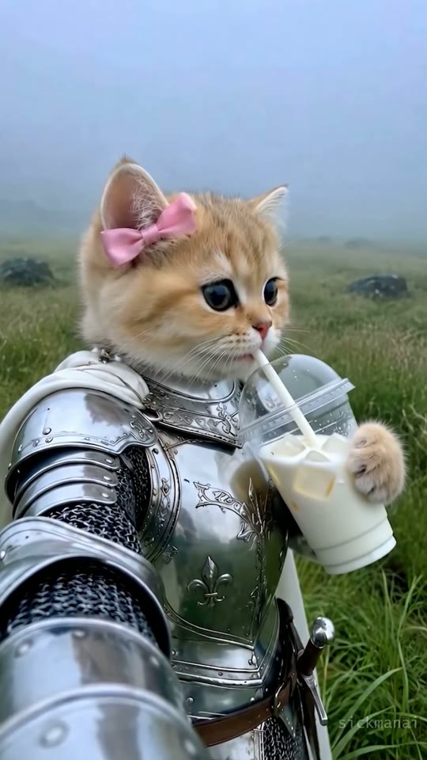
g_01.75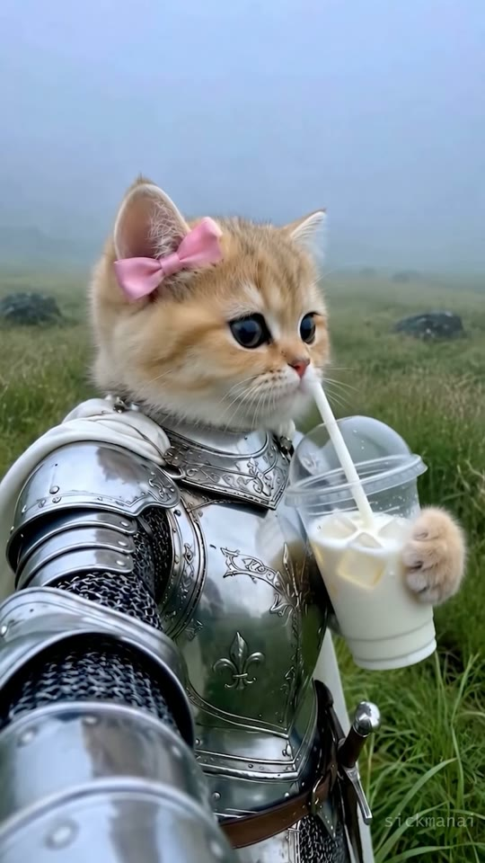
g_02.75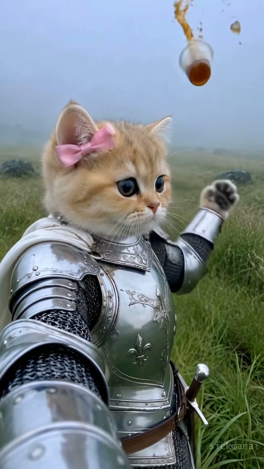
g_03.75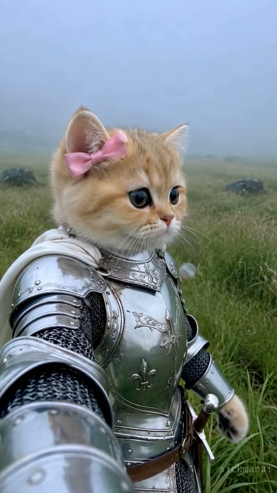
g_04.75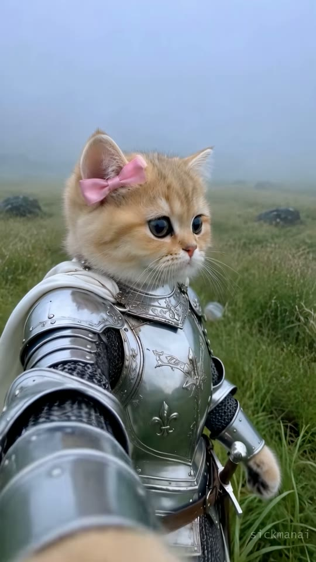
g_05.25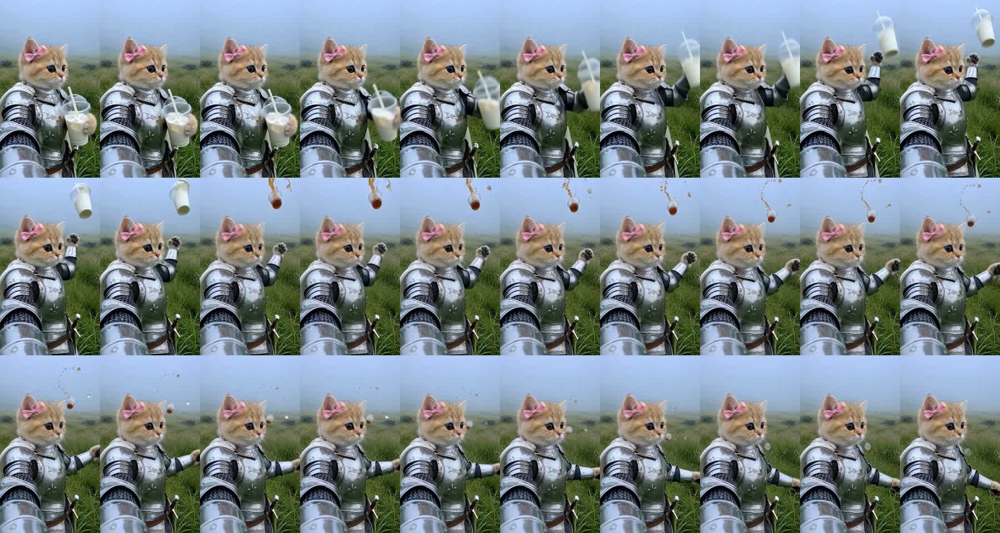
x_3.30_fps30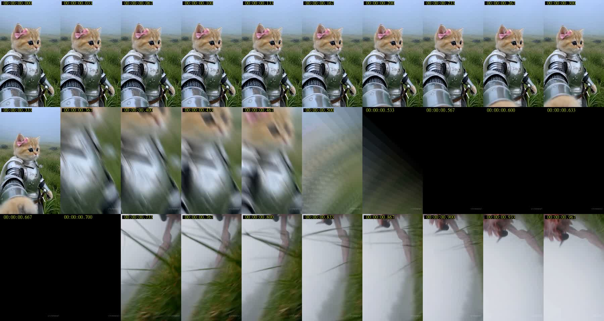
x_5.00_fps30| 카메라 움직임 | 셀카 핸드헬드. 광학 흐름 0.07px/f 수준의 거의 고정 + 미세 흔들림. 카메라 이동/줌 없음. 5.30s 새끼고양이 발이 화면 하단 중앙으로 들어와 폰을 잡고 5.37~5.53s(5프레임) 폰이 아래로 휙 내던져지며 강한 방향성 모션블러(휙 패닝) 발생. |
|---|---|
| 화면 구성(구도) | 머리 중심 x43%,y36%, 머리 세로범위 y21~50%(프레임 높이의 약 29%), 몸통은 하단에서 잘림. 전경 좌하단(x0~45%, y65~100%)에 셀카를 든 자기 오른팔 갑옷(둥근 완갑+사슬갑옷)이 크게 걸림. 우유컵은 x80%,y65% (왼발=화면 오른쪽). 칼자루 폼멜 x75%,y82%. 수평선 y31%(3분할 상단선 부근), 헤드룸 약 20%(안개 하늘). 좌측 바위 x5%,y36%, 우측 바위 x88%,y37%. 얼굴은 3분할 좌상 교차점 약간 오른쪽. 우측 하단 워터마크 'sickmanai'. |
| 동물 행동/연기 | 0.00~1.20 우유컵을 가슴 앞에 들고 화면 오른쪽을 흘끗 봄 → 1.25~3.20 빨대로 우유를 쪽쪽 마심(눈은 계속 오른쪽 경계) → 3.40 팔을 바깥으로 휘둘러 3.53 컵을 오른쪽 위로 무심하게 던짐(컵이 3.60~4.10 사이 화면 우상단 밖으로 날아감, 3.70부터 액체가 갈색으로 변하는 AI 오류 있음) → 3.60~4.40 발을 들고 털듯이 흔든 뒤 내려서 4.50 칼자루 근처에 댐 → 4.50~5.30 진지한 표정으로 오른쪽을 응시(무언가 있다는 암시) → 5.30 발이 렌즈 쪽으로 다가옴 → 5.37~5.53 폰이 내던져지며 얼굴/갑옷이 모션블러로 스쳐감. |
| 배경 | 안개 낀 초록 황야(무어랜드), 젖은 긴 풀, 지평선 위 검은 이끼 바위 2개, 흰회색 짙은 안개, 흐린 하늘. 배경은 부드럽게 아웃포커스. |
| 화면 문구/자막 | 없음 (워터마크 sickmanai만) |
| 다음 컷 전환 | Whip / motion-blur throw -> smash to black (dip to black, 6 frames) -> hard cut — 5.37~5.53s(5프레임) 폰이 던져지는 휙 모션블러(대각선 우하향 방향, 갑옷·얼굴이 번짐) → 5.53s 1프레임 동안 대각선 줄무늬로 어두워짐 → 5.57~5.70s 완전 검정 5프레임(총 검정 약 0.17~0.20s) → 5.73s 하드컷으로 땅에 떨어져 구르는 폰 시점 시작. 검정은 '폰이 땅에 엎어짐'을 뜻하는 디제틱 암전. |
| BGM 상태 | 잔잔한 멜로디 BGM이 낮게 깔림(추정, 약 -24dB 수준). 피아노/패드 계열의 지속음(267Hz·412Hz·540Hz대 음정이 0.4~1s씩 유지) — 컷을 넘어 계속됨. |
Vertical 9:16 photorealistic smartphone front-camera selfie frame. Subject: a tiny fluffy golden British Shorthair kitten (about 10 weeks old) with cream-gold chinchilla-tipped fur, white muzzle and fluffy white chest ruff, long white whiskers, round chubby face, huge round dark eyes with a blue-grey sheen, small pink nose, a pink satin ribbon bow tied at the base of its right ear (viewer's left), wearing full polished silver medieval plate armor with engraved scroll filigree and a fleur-de-lis on the breastplate, layered rounded pauldrons, chainmail sleeves, a cream-white wool cape draped over its shoulders and down its back, a brown leather sword belt and a short arming sword with a round silver pommel sheathed at its left hip; it stands upright like a small knight, real kitten head and fluffy real cat paws. The kitten holds the phone itself with its outstretched right arm: the armored forearm, a large rounded polished vambrace and chainmail fill the bottom-left foreground (x 0-45%, y 65-100%), slightly soft and close to the lens. Kitten's head centered at x 43%, y 36% of the frame, head spanning y 21%-50%, body cropped at the bottom edge, three-quarter view turned slightly to the viewer's right, eyes glancing right. In its left paw (viewer's right, x 80%, y 65%) it holds a clear plastic takeaway cup with a clear domed lid and a white straw, filled with iced milk and ice cubes; the sword's silver pommel shows at x 75%, y 82%. Background: a flat misty green moorland of tall wet grass with scattered dark mossy boulders, the horizon dissolving into thick white-grey fog, overcast sky, cold damp morning, horizon line at y 31%, two dark boulders on the horizon at x 5% and x 88%. Soft diffuse overcast light, no hard shadows, cool blue-green-grey palette with warm golden fur, grey sky reflected in the polished armor. 24mm smartphone wide-angle, eye level, gentle background blur, natural phone-camera realism with slight sensor noise. No text.
Same selfie framing and character; the kitten's hand is lowered near the sword hilt, no cup in frame, it stares to the viewer's right with a serious determined expression, mouth closed; misty moorland unchanged.
Handheld smartphone selfie video, the kitten knight holds the phone with its own right arm; only subtle natural handheld micro-jitter, no camera travel, no zoom. 0-1.2s: the kitten holds the iced milk cup near its chest and glances off to the right. 1.2-3.2s: it lifts the cup and sips through the straw, cheeks moving, eyes still watching something to the right. 3.3-3.6s: with a casual backhand flick it tosses the cup up and away to the upper right; the cup tumbles out of frame top-right, white milk splashing. 3.6-4.5s: its paw stays raised for a beat, shakes once, then drops to rest on the sword hilt. 4.5-5.3s: it stares right with a serious, determined face. 5.3-5.5s: its paw reaches toward the lens and the phone is suddenly flung downward with heavy motion blur. Keep the kitten's face, pink bow position, armor engravings and misty moorland identical throughout; realistic fur and whisker motion; realistic liquid physics; the milk stays white.
text, captions, subtitles, logo, watermark, extra limbs, extra paws, human hands, human fingers, deformed face, cross-eyed, cartoon, anime, 3D plastic CGI look, toy look, missing bow, bow changing color or side, armor morphing, sword appearing from nowhere, drink turning brown, color flicker, frame tearing, duplicate subjects, second kitten, oversaturated, lens flare, sunny sky, blue sky, low resolution, second cup, cup reappearing, phone visible in frame, human selfie arm
image2video, 9:16 1080x1920, 길이 5s(원본 가시 구간 5.53s — 6s 지원 모델이면 6s, 아니면 5s 생성 후 마지막 0.5s는 ffmpeg 휙 블러로 연장). 시작 프레임=nano-banana-pro 캐릭터 시트 기반 이미지. 끝 표정이 흔들리면 first-last frame 모드로 end_frame 지정. 동작이 많으니 3~4회 시드 뽑기 후 컵이 흰색 유지되는 테이크 선택. 원본은 24fps 소스(30fps에서 5프레임마다 중복)였음.
[s1]trim=0:5.37,setpts=PTS-STARTPTS[a];[s1]trim=5.37:5.53,setpts=PTS-STARTPTS,gblur=sigma=28:sigmaV=6,rotate=a='0.35*t/0.16':fillcolor=black,eq=brightness='-0.35*t/0.16':eval=frame[w];color=black:s=1080x1920:r=30:d=0.20[blk];[a][w][blk]concat=n=3:v=1:a=0[v1]
Clip s01 0.00-5.53 on track V1; add a 'whip' effect on the last 0.16s (directional blur 40px at -60deg + 20deg rotate + scale 1.15, ease-in), then a solid black clip 5.53-5.73 on V1 (no fade, hard in/out).
Vertical 9:16 photorealistic smartphone front-camera selfie frame. Subject: a tiny baby golden Syrian hamster (about 6 weeks old) with golden-orange fur on its back and head, cream-white cheeks, muzzle and belly, chubby puffed cheeks, small round rose-pink ears, shiny black bead eyes with a tiny catchlight, pink nose, long fine white whiskers, a pink satin ribbon bow tied at the base of its right ear (viewer's left), wearing full polished silver medieval plate armor scaled to its body with engraved scroll filigree and a fleur-de-lis on the breastplate, rounded pauldrons, chainmail sleeves, a cream-white wool cape over its shoulders and down its back, a brown leather sword belt and a tiny arming sword with a round silver pommel at its left hip; it stands upright like a small knight, real hamster head and tiny pink hamster paws. It holds the phone with its own outstretched right arm: the tiny armored forearm and rounded polished vambrace fill the bottom-left foreground (x 0-45%, y 65-100%), soft and close to the lens. Hamster head centered at x 43%, y 38%, head spanning y 24%-52%, body cropped at the bottom edge, three-quarter view turned slightly to the viewer's right, eyes glancing right. In its left paws (viewer's right, x 78%, y 65%) it hugs a miniature clear plastic takeaway cup with a domed lid and white straw, filled with iced milk and tiny ice cubes, cup scaled to the hamster (cup height about 22% of frame). Background: a flat misty green moorland of tall wet grass with scattered dark mossy boulders, the horizon dissolving into thick white-grey fog, overcast sky, cold damp morning, horizon line at y 31%, two dark boulders on the horizon at x 5% and x 88%. Soft diffuse overcast light, cool blue-green-grey palette with warm golden fur, 24mm smartphone wide-angle, eye level, gentle background blur, natural phone-camera realism. No text.
Handheld smartphone selfie video, the hamster knight holds the phone with its right arm; subtle micro-jitter only. 0-1.2s: it hugs the mini iced milk cup and glances right, whiskers twitching. 1.2-3.2s: it sips through the straw, cheeks puffing in and out. 3.3-3.6s: it flings the cup up and away to the upper right with both tiny paws; cup tumbles out of frame, milk splashing white. 3.6-4.5s: it brushes its paws together then rests one paw on the sword hilt. 4.5-5.3s: serious stare to the right, cheeks still. 5.3-5.5s: its paw reaches toward the lens and the phone is flung downward with heavy motion blur. Keep face, bow, armor and background identical; milk stays white.
햄스터는 팔이 짧아 '셀카 팔'이 어색해지기 쉬움 → 전경 팔을 더 크게/흐리게 지시. 컵은 햄스터 크기에 맞춘 미니컵으로 명시(원본 비율 그대로면 컵이 몸보다 커짐). 볼 주머니 오물거림이 원본의 빨대 마시기보다 귀여움 포인트.
| 카메라 움직임 | 없음 — 순수 검정 프레임(5.57~5.70 완전 검정, 5.53은 어두워지는 대각 스미어 1프레임). |
|---|---|
| 화면 구성(구도) | 전면 검정. 워터마크는 계속 표시됨(우하단). |
| 동물 행동/연기 | 폰이 풀밭에 엎어진 순간을 암전으로 표현(디제틱 블랙). |
| 배경 | 없음 |
| 화면 문구/자막 | 없음 |
| 다음 컷 전환 | Hard cut from black — 5.73s 페이드 없이 바로 굴러가는 폰 시점(모션블러 가득한 첫 프레임)으로 하드컷. pixel diff 110 스파이크. |
| BGM 상태 | BGM 유지(끊지 않음). |
생성 불필요. 편집에서 검정 0.20s(30fps 6프레임) 삽입.
color=black:s=1080x1920:r=30:d=0.20 (concat between s1 and s3, no xfade)
Solid #000 clip 5.53-5.73 on V1, hard cut into s03 at 5.73.
동일하게 검정 0.20s 삽입.
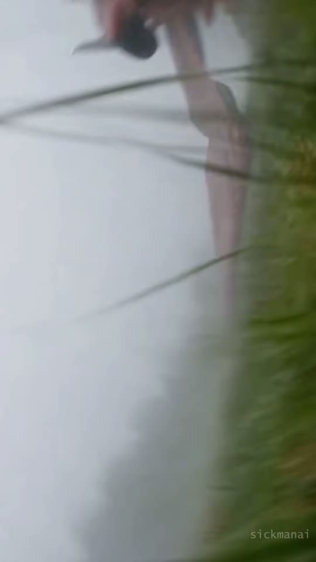
s02_in_05.80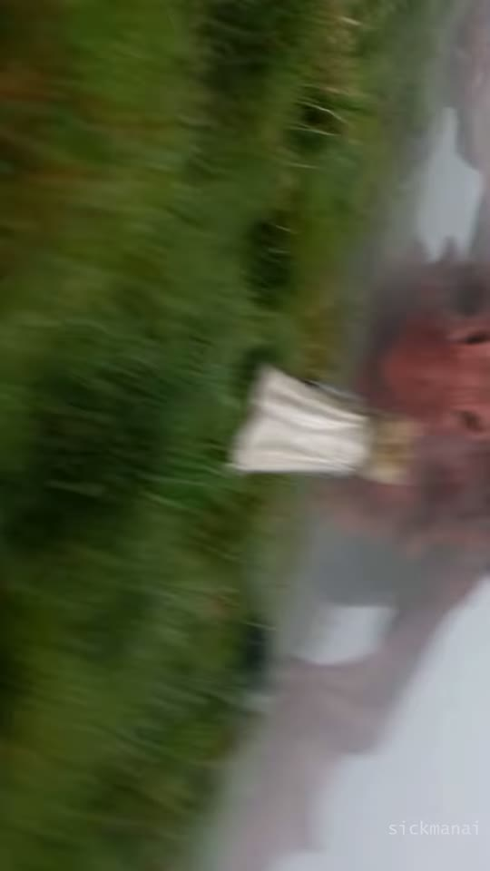
g_06.25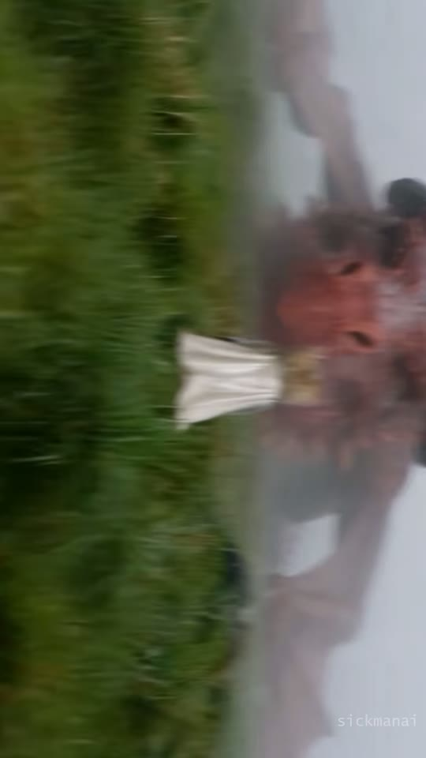
g_06.75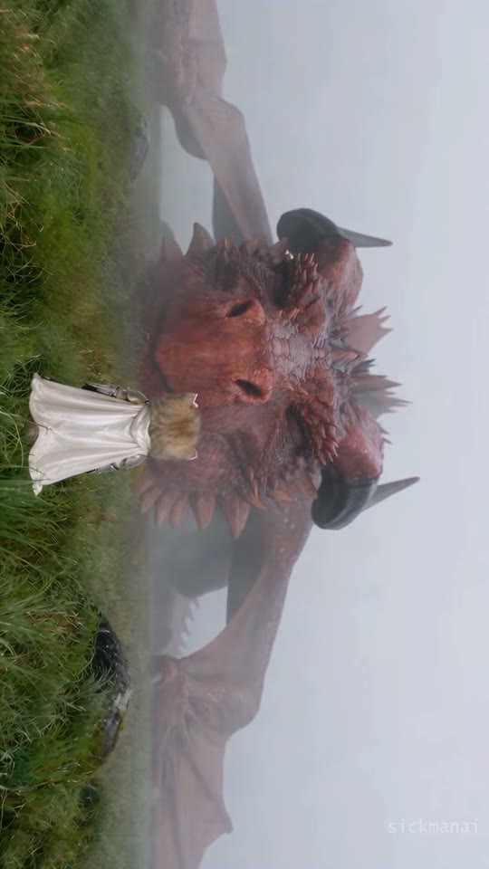
g_07.75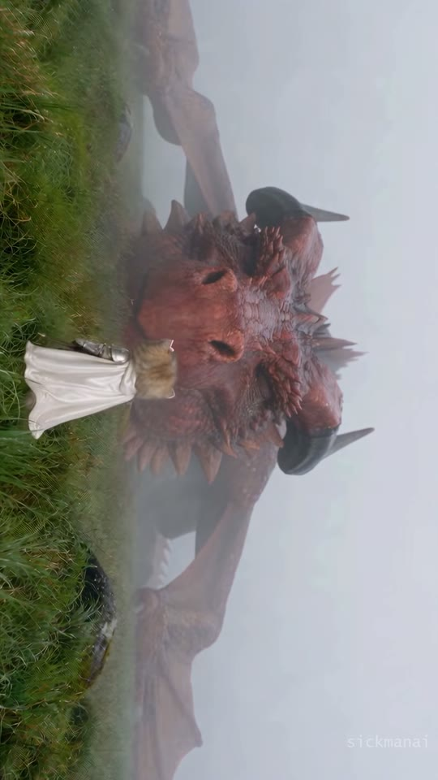
g_09.25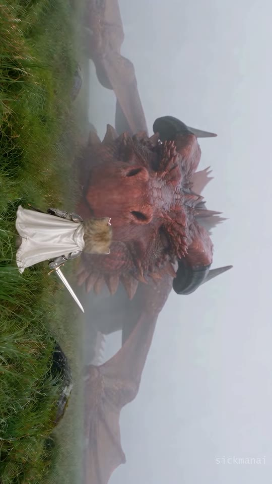
g_09.75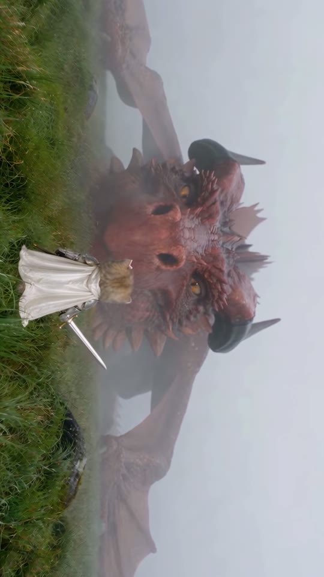
g_10.75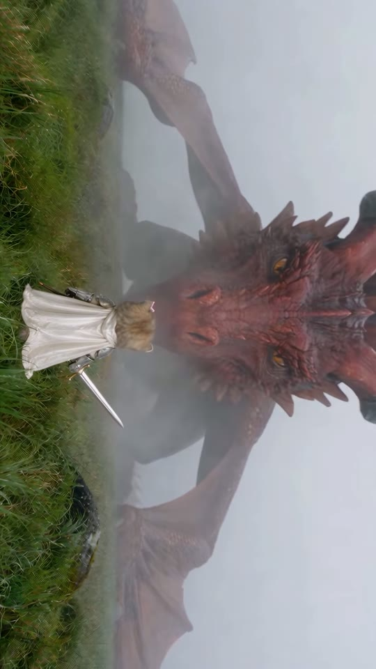
g_12.25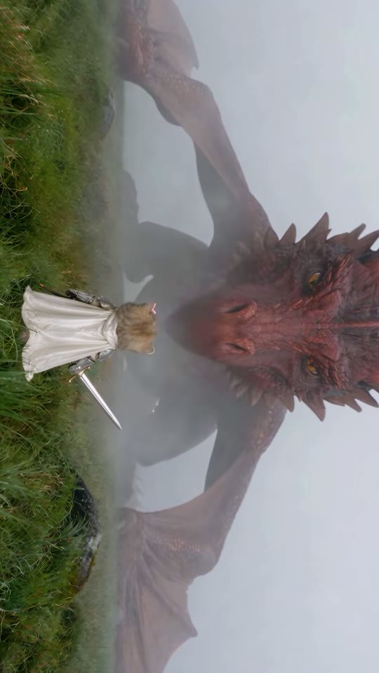
g_12.75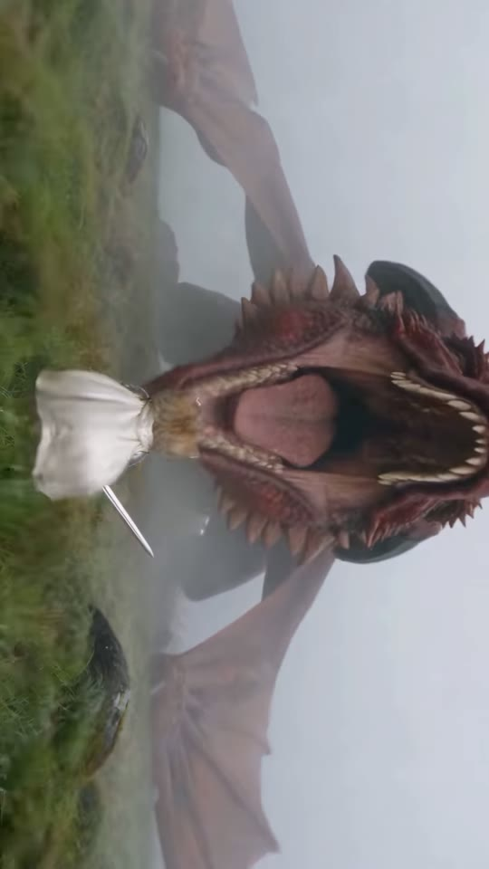
g_13.25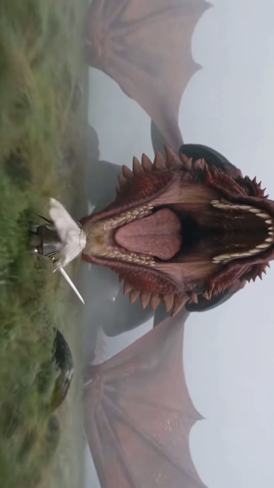
g_13.75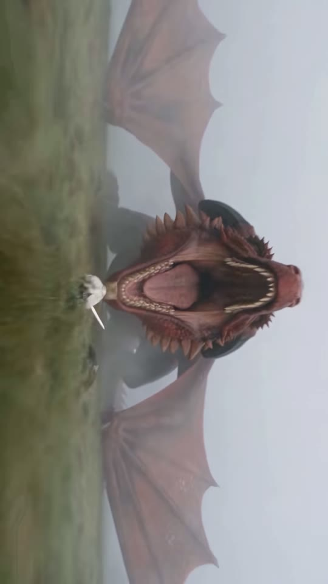
g_14.25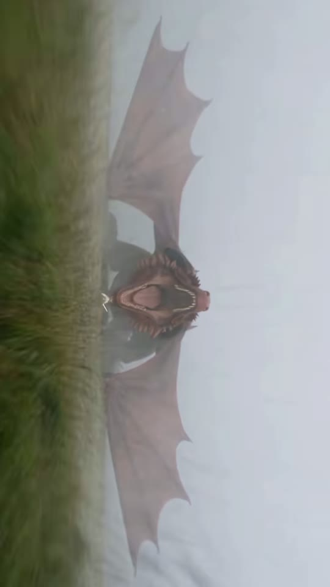
x_last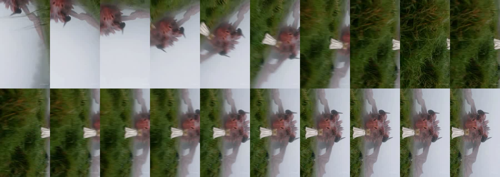
x_5.90_fps15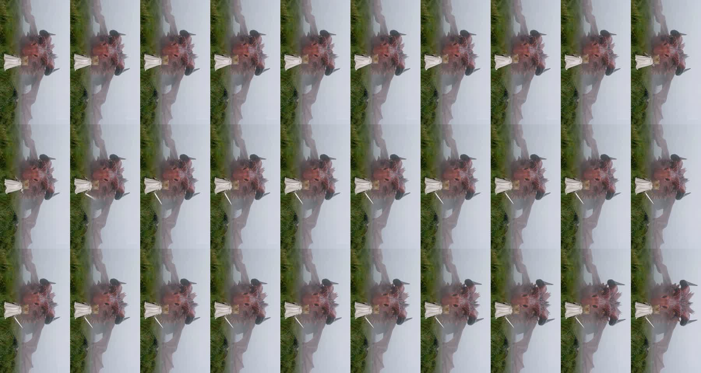
x_8.40_fps10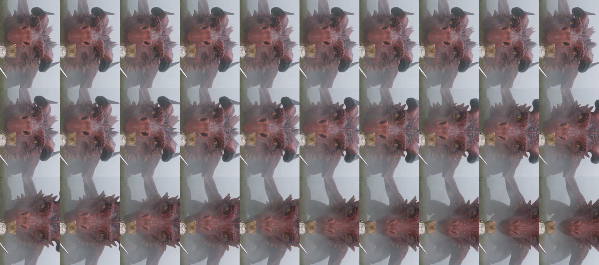
x_9.80_fps10_crop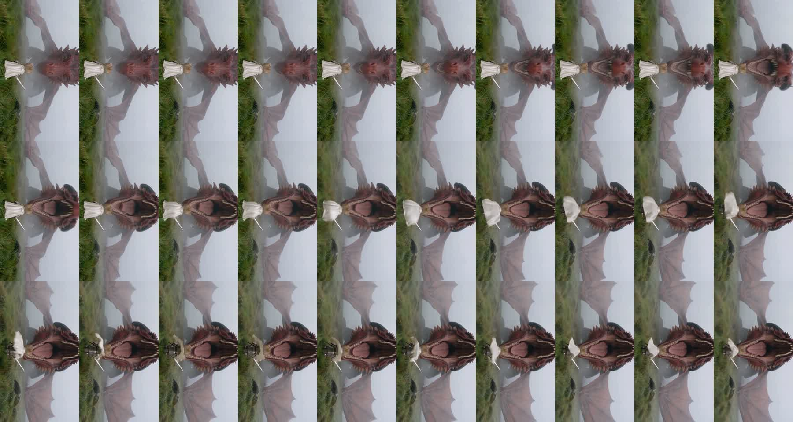
x_12.80_fps30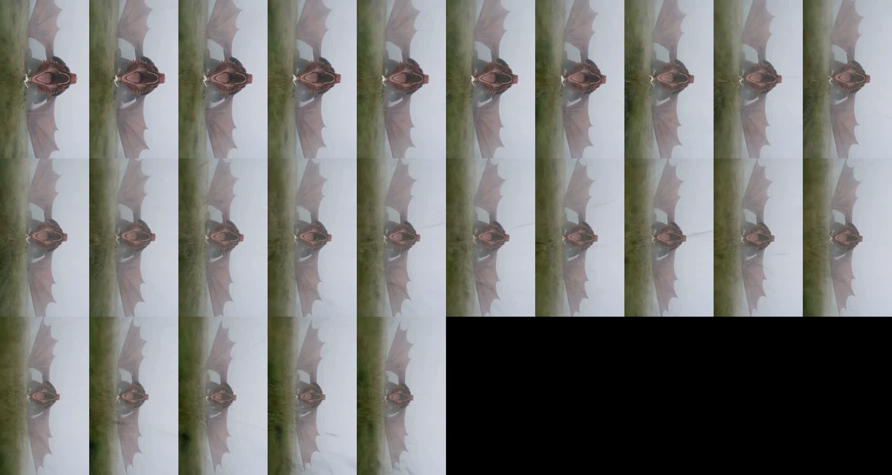
x_14.40_fps30| 카메라 움직임 | 5.73~7.10 떨어진 폰이 풀밭에서 180도 구르며 안착(뒤집힌 화면→용 다리·뿔이 스침→6.3~6.9 풀에 파묻혀 초록 블러→7.10 옆으로 누운 채 정지). 7.10~13.50 완전 고정(locked-off, 흐름 0.18px/f). 13.50~15.23 포효 바람에 폰이 뒤로 밀리며 빠른 풀백(돌리 아웃) + 전경 풀 모션블러, 용 머리 크기 약 50%→25%. |
|---|---|
| 화면 구성(구도) | 최종 9:16 기준(90도 회전 상태): 풀/땅이 화면 왼쪽 0~30%를 세로로 채움(수평선 x≈30%의 세로선). 새끼고양이는 옆으로 누운 형태로 x5~40%, y44~57%(머리 x35~40%), 등과 흰 망토가 카메라 쪽. 용 머리 중심 x55%,y45%, 머리가 세로 y27~62% 차지, 날개는 위(y0~25%)와 아래(y70~100%)로 펼쳐짐, 오른쪽 40%는 흰 안개 하늘. 원래 가로 영상 기준: 땅 하단 30%, 수평선 y70%, 고양이 하단 중앙 x50%(프레임 높이의 35%), 용 머리 x45%,y45%. 13.0s 이후 용 머리가 원래 기준 위로(최종 기준 오른쪽으로) 들림. 워터마크는 9.85s까지만 보이고 이후 사라짐. |
| 동물 행동/연기 | 5.73~7.10 폰 구름/안착(용의 발톱 달린 앞다리·뿔이 뒤집힌 채 스침) → 7.10~9.40 고양이가 등을 보이고 서서 잠든 거대한 붉은 용(턱을 땅에 괴고 눈 감음)과 대치, 안개만 흐름 → 9.40~9.55 고양이가 허리에서 검을 뽑아 아래로 비스듬히 쥠(칼끝이 땅 쪽) → 10.40~10.80 용의 황금빛 눈이 천천히 뜸 → 11.20~12.90 용이 머리를 천천히 들어 고양이 위로 솟음 → 13.00~13.30 입을 쩍 벌려 포효(분홍 혀·이빨 열) → 13.30~15.23 포효 계속, 바람에 망토 펄럭·고양이 버팀, 폰이 뒤로 밀려나며 날개를 활짝 편 용 전체가 드러남 → 포효 도중 컷(클리프행어). |
| 배경 | 흰회색 짙은 안개, 초록 젖은 풀, 전경 좌하단 검은 바위(최종 x20~25%, y70~80%), 용 몸통·날개가 안개에 반쯤 녹아 반투명. 1부보다 채도 낮음(sat 71→56). |
| 화면 문구/자막 | 없음 (워터마크 sickmanai는 9.85s까지) |
| 다음 컷 전환 | End on action (hard cut to end / cliffhanger, no loop) — 15.23s 포효가 최고조인 상태에서 그대로 끝남. 페이드 없음. 'Part 1' 클리프행어 → 다음 릴 유도. 첫 프레임과 매칭되는 루프 아님. |
| BGM 상태 | BGM 계속 낮게(추정). 13.0s 포효부터 덕킹(-8dB)되거나 포효에 묻힘. |
Horizontal 16:9 photorealistic frame from a smartphone lying in the grass at ground level (lens 5 cm above the ground, lens axis parallel to the ground). Bottom 30% of the frame: wet green grass blades very close to the lens, slightly soft, with a dark mossy boulder at bottom-left. At bottom center (x 50%, feet at y 96%, head top at y 60%, height about 35% of frame) stands, seen from directly behind, a tiny fluffy golden British Shorthair kitten (about 10 weeks old) with cream-gold chinchilla-tipped fur, white muzzle and fluffy white chest ruff, long white whiskers, round chubby face, huge round dark eyes with a blue-grey sheen, small pink nose, a pink satin ribbon bow tied at the base of its right ear (viewer's left), wearing full polished silver medieval plate armor with engraved scroll filigree and a fleur-de-lis on the breastplate, layered rounded pauldrons, chainmail sleeves, a cream-white wool cape draped over its shoulders and down its back, a brown leather sword belt and a short arming sword with a round silver pommel sheathed at its left hip; it stands upright like a small knight, real kitten head and fluffy real cat paws — its cream-white cape covers its back, arms at its sides. It faces a colossal dark crimson-red western dragon with pebbled red scales and darker ridged plates, a crown of red-brown spikes and frills around the head, two large glossy black horns curving back from the brow and two from the jaw, huge flared nostrils, heavy brow, amber-gold eyes, leathery bat-like wings in muted red-mauve with visible finger bones, wings folded high behind it. The dragon lies on the moorland right in front of the kitten, its enormous head resting chin-down on the grass, head centered at x 45%, y 45%, about 35% of the frame wide, eyes closed as if asleep; its folded wings rise behind it on both sides (left wing x 5-30%, right wing x 60-95%) fading into the fog. Setting: a flat misty green moorland of tall wet grass with scattered dark mossy boulders, the horizon dissolving into thick white-grey fog, overcast sky, cold damp morning. Thick white-grey fog makes the dragon's body and wings semi-translucent; flat overcast light, no sun, desaturated cool palette, crimson dragon as the only strong color. 16mm ultra-wide phone lens, deep focus, extreme scale contrast, photoreal, no text.
Horizontal 16:9, same ground-level phone view pulled back about 2x wider: foreground grass motion-blurred across the bottom 30%, the tiny kitten knight now very small at bottom center with sword lowered and cape blown back, the red dragon mid-roar with jaws wide open, head centered at x 50%, y 40%, about 20% of frame wide, huge leathery wings spread fully to both frame edges, thick white fog.
10 second shot, landscape, from a dropped smartphone. 0-1.4s: the phone is tumbling after being dropped: the view starts upside down with the dragon's clawed foreleg and black horns flashing past, heavy motion blur, it rolls 180 degrees, grass blades smear across the lens, it thumps into the grass partially buried, then the grass clears and the view settles, still. 1.4-3.7s: completely static locked-off camera on the ground; fog drifts slowly; the huge red dragon sleeps with its chin on the grass, subtle breathing; the tiny kitten knight stands still facing it from behind. 3.7-3.9s: the kitten quickly draws its short sword from its left hip and holds it low, blade angled down toward the grass. 4.7-5.1s: the dragon's amber-gold eyes slowly open. 5.5-7.2s: the dragon slowly lifts its massive head, rising above the kitten, spikes and horns towering. 7.3-7.6s: the dragon opens its jaws extremely wide, rows of ivory teeth and a pink tongue, and roars. 7.6-9.5s: the roar blast whips the kitten's cape, the kitten braces, and the phone is pushed backward, sliding fast through the grass: the camera pulls back along the ground with motion-blurred grass in the foreground, revealing the dragon spreading its enormous wings wide. Keep the fog, light and dragon anatomy consistent; the kitten stays small, faces away and never turns around.
text, captions, subtitles, logo, watermark, extra limbs, extra paws, human hands, human fingers, deformed face, cross-eyed, cartoon, anime, 3D plastic CGI look, toy look, missing bow, bow changing color or side, armor morphing, sword appearing from nowhere, drink turning brown, color flicker, frame tearing, duplicate subjects, second kitten, oversaturated, lens flare, sunny sky, blue sky, low resolution, camera facing the kitten's face, kitten turning around, dragon breathing fire, fire, sparks, sunlight, dragon walking away, multiple dragons, dragon with two heads, tilted horizon after the landing, cut, scene change
반드시 16:9 가로(1920x1080)로 생성 후 편집에서 시계방향 90도 회전(transpose=1) → 9:16. 9:16으로 '옆으로 누운 화면'을 직접 생성하면 모델이 수평을 바로잡아버림. 10s 생성 → 앞 0.5s 버리고 9.50s 사용. 구르기 구간이 안 나오면: (A) 정지 구간부터 생성하고 앞에 1.4s짜리 '폰 낙하 굴림' 클립을 따로 생성(image2video, 같은 시작 이미지 흐리게) 후 하드컷, 또는 (B) 첫 1.4s를 ffmpeg 회전(rotate 180→0)+강한 블러로 합성. 풀백이 약하면 13.5s부터 zoompan 역줌(1.35→1.0)으로 보강. Higgsfield(원작 크레딧)에서도 동일 모델(Kling/Veo/Seedance)로 가능.
trim end at 15.23 with -t 15.23; no fade on video; audio afade out 0.05s only to avoid click
End composition at 15.23s exactly; no outro, no fade.
Horizontal 16:9 photorealistic frame from a smartphone lying in the grass at ground level (lens 5 cm above the ground). Bottom 30%: wet green grass blades close to the lens, dark mossy boulder at bottom-left. At bottom center (x 50%, feet at y 96%, head top at y 64%, height about 32% of frame) stands, seen from directly behind, a tiny baby golden Syrian hamster (about 6 weeks old) with golden-orange fur on its back and head, cream-white cheeks, muzzle and belly, chubby puffed cheeks, small round rose-pink ears, shiny black bead eyes with a tiny catchlight, pink nose, long fine white whiskers, a pink satin ribbon bow tied at the base of its right ear (viewer's left), wearing full polished silver medieval plate armor scaled to its body with engraved scroll filigree and a fleur-de-lis on the breastplate, rounded pauldrons, chainmail sleeves, a cream-white wool cape over its shoulders and down its back, a brown leather sword belt and a tiny arming sword with a round silver pommel at its left hip; it stands upright like a small knight, real hamster head and tiny pink hamster paws — its cream-white cape covers its round back, its golden fluffy head and pink ears visible from behind. It faces a colossal dark crimson-red western dragon with pebbled red scales and darker ridged plates, a crown of red-brown spikes and frills around the head, two large glossy black horns curving back from the brow and two from the jaw, huge flared nostrils, heavy brow, amber-gold eyes, leathery bat-like wings in muted red-mauve with visible finger bones, wings folded high behind it, lying on the moorland with its enormous head resting chin-down on the grass right in front of the hamster, head centered at x 45%, y 45%, about 35% of frame wide, eyes closed; wings folded high on both sides fading into the fog. Setting: a flat misty green moorland of tall wet grass with scattered dark mossy boulders, the horizon dissolving into thick white-grey fog, overcast sky, cold damp morning. Thick fog, flat overcast light, desaturated cool palette, 16mm ultra-wide phone lens, deep focus, extreme scale contrast, photoreal, no text.
10 second shot, landscape, from a dropped smartphone. 0-1.4s: the phone tumbles and rolls 180 degrees, dragon's foreleg and horns flash past upside down, grass smears across the lens, it lands in the grass and settles still. 1.4-3.7s: static ground-level camera; fog drifts; the dragon sleeps; the tiny hamster knight stands still, facing it. 3.7-3.9s: the hamster draws its tiny sword and holds it low, blade angled down. 4.7-5.1s: the dragon's amber eyes open. 5.5-7.2s: the dragon slowly lifts its massive head. 7.3-7.6s: the dragon opens its jaws wide and roars. 7.6-9.5s: the roar blast ruffles the hamster's fur and whips its cape, the hamster braces, and the phone slides backward through the grass, camera pulling back fast, revealing the dragon's wings spreading wide. Hamster stays small, faces away, never turns around; fog and light constant.
뒷모습이라 햄스터 정체성은 '둥근 황금 털 뒤통수 + 분홍 동그란 귀 + 핑크 리본'으로만 전달됨 → 귀·리본을 프롬프트 앞쪽에 배치. 햄스터는 고양이보다 작게 보여 스케일 대비가 더 커짐(더 유리). 바람에 털이 부풀어 오르는 연출 추가 권장.
추정: 느리고 서정적인 시네마틱 앰비언트(피아노/신스 패드/현악 지속음), 드럼 없음, 낮은 볼륨. 근거: 0~15s 내내 267Hz·412Hz·540Hz·1087Hz 대 음정이 0.4~1s 단위로 유지·전환되며 5.73s 컷을 넘어 연속(음악 트랙이 컷과 무관하게 깔림). 알고리즘 템포 178.6 BPM은 더블타임 추정 → 실제 약 89 BPM. 무드는 1부 잔잔 → 2부 긴장(저역 바람/숨소리가 더해짐) → 13.0s 포효가 모든 것을 덮음.
Slow, tender cinematic ambient underscore at 89 BPM in C-sharp minor, soft felt piano single notes over warm synth pad and distant legato strings, misty and melancholic yet brave, no drums, no vocals, gentle swell in the second half building subtle tension with a low cello drone, instrumental, 15 seconds, ends unresolved.
| 0.0s | moorland wind ambience, light grass rustle · -24 dB 검색어: wind moor grass ambience light 생성: Gentle cold wind over an open grassy moor, soft grass rustle, distant and airy, no birds |
|---|---|
| 2.4s | tiny straw slurp · -14 dB 검색어: straw slurp drink small 생성: A small cute sip through a plastic straw from an iced drink, short slurp |
| 3.52s | whoosh + plastic cup flick · -8 dB 검색어: throw whoosh plastic cup 생성: Quick light whoosh of a plastic cup thrown into the air with ice rattling |
| 4.29s | distant cup landing splash · -18 dB 검색어: plastic cup drop grass splash distant 생성: Distant plastic cup landing in wet grass with a small liquid splash |
| 5.37s | fast whoosh + armor clank · -6 dB 검색어: fast whoosh armor clank 생성: Very fast whoosh with a short metallic armor clank as a phone is flung |
| 5.58s | muffled phone thud on grass · -8 dB 검색어: phone drop grass thud muffled 생성: Muffled thud of a smartphone landing face-down on soft grass, close mic |
| 6.53s | phone tumble thump 1 · -10 dB 검색어: phone tumble grass thump 생성: Phone tumbling on turf, soft thump and grass swish, close mic |
| 6.78s | phone tumble thump 2 · -12 dB 검색어: phone tumble grass thump 생성: Second softer thump of a phone rolling on grass |
| 7.06s | phone settles heavy thud · -6 dB 검색어: object land grass thud close 생성: Phone settling into grass with a heavy close-mic thud and rustle |
| 7.1s | low wind drone + giant breathing · -16 dB 검색어: giant creature breathing low rumble wind 생성: Deep slow breathing of a sleeping giant dragon, low rumbling, foggy wind |
| 8.69s | dragon nostril exhale · -12 dB 검색어: dragon snort exhale 생성: A huge dragon exhaling through its nostrils, deep airy snort |
| 9.39s | sword unsheathe ring · -6 dB 검색어: sword unsheathe metal ring 생성: Small sword drawn from a scabbard, metallic scrape ending in a bright ring |
| 10.5s | low growl rising · -12 dB 검색어: dragon low growl rumble 생성: Very low rumbling dragon growl slowly rising, sub-bass |
| 13.0s | massive dragon roar · -2 dB 검색어: dragon roar huge monster 생성: Enormous dragon roar, long and sustained for 2.3 seconds, powerful low end, slight distortion, close |
| 13.6s | wind blast + grass rush + cape flap · -8 dB 검색어: wind gust blast cloth flap 생성: Violent gust of wind blasting across grass, cloth cape flapping, microphone buffeting |
BGM -20~-24dB 기준(작게), 앰비언스 -24dB. SFX는 화면 이벤트에 프레임 단위 싱크. 13.0s 포효 시작 시 BGM -8dB 덕킹(0.2s 램프), 포효 -2dB 피크 리미터 -1dBTP. 끝(15.23s)은 페이드 없이 컷(클릭 방지용 20~50ms만). 전체 목표 -14 LUFS(릴스).
기본 교체 동물: baby golden hamster (golden Syrian hamster pup) · 대안: baby Holland Lop bunny (cream-and-white, floppy lop ears, pink bow on the right ear), baby red panda cub (rusty-red fur, white face mask, ringed fluffy tail peeking under the cape)
Character reference turnaround sheet, photorealistic, neutral light-grey studio background, soft even lighting, 4 views in one row: front, 3/4 left, side profile, back view, plus one close-up head portrait inset. Character: a tiny baby golden Syrian hamster (about 6 weeks old) with golden-orange fur on its back and head, cream-white cheeks, muzzle and belly, chubby puffed cheeks, small round rose-pink ears, shiny black bead eyes with a tiny catchlight, pink nose, long fine white whiskers, a pink satin ribbon bow tied at the base of its right ear (viewer's left), wearing full polished silver medieval plate armor scaled to its body with engraved scroll filigree and a fleur-de-lis on the breastplate, rounded pauldrons, chainmail sleeves, a cream-white wool cape over its shoulders and down its back, a brown leather sword belt and a tiny arming sword with a round silver pommel at its left hip; it stands upright like a small knight, real hamster head and tiny pink hamster paws. Standing upright on hind legs, same scale in every view, clear visibility of the pink bow position (right ear), the fleur-de-lis breastplate, the cape covering the back, the sword at the left hip. Also include a separate prop row: miniature clear domed-lid iced milk cup with white straw, the short arming sword. Hyper-realistic fur, no text labels.
#!/usr/bin/env bash
# v01 kitten-knight vs dragon — assemble final 1080x1920 30fps (15.23 s)
# inputs: s01.mp4 (9:16 selfie gen, >=5.6s), s03.mp4 (16:9 landscape dragon gen, >=10s), bgm.mp3,
# sfx/*.wav (names below). Run in Git Bash; all ffmpeg calls read stdin from /dev/null.
set -euo pipefail
W=1080; H=1920
HANDLE="yourhandle" # your own watermark, never copy 'sickmanai'
FONT="C\\:/Windows/Fonts/consola.ttf"
# ---------- VIDEO ----------
ffmpeg -y -v error -i s01.mp4 -i s03.mp4 -filter_complex "
[0:v]fps=24,scale=${W}:${H}:force_original_aspect_ratio=increase,crop=${W}:${H},setsar=1,split=2[s1a][s1b];
[s1a]trim=0:5.37,setpts=PTS-STARTPTS[p1];
[s1b]trim=5.37:5.53,setpts=PTS-STARTPTS,
gblur=sigma=30:sigmaV=4,
rotate=a='-0.6*t/0.16':c=black:ow=${W}:oh=${H},
eq=brightness='-0.5*t/0.16':eval=frame[whip];
color=black:s=${W}x${H}:r=24:d=0.20,setsar=1[blk];
[1:v]fps=24,trim=0.50:10.00,setpts=PTS-STARTPTS,
transpose=1,
scale=${W}:${H}:force_original_aspect_ratio=increase,crop=${W}:${H},setsar=1,
eq=saturation=0.88:contrast=0.97[p3];
[p1][whip][blk][p3]concat=n=4:v=1:a=0,
eq=saturation=0.95:gamma=1.02,
fps=30,
drawtext=fontfile='${FONT}':text='${HANDLE}':fontcolor=white@0.6:fontsize=26:x=w-tw-22:y=h-th-80:enable='lt(t,9.87)'
[vout]" -map "[vout]" -an -c:v libx264 -crf 18 -preset slow -pix_fmt yuv420p -t 15.23 v_only.mp4 < /dev/null
# OPTIONAL (only if the generated pull-back after 13.50 s is too weak): append to the [p3] chain
# ,zoompan=z='if(lt(in,186),1.35,max(1.0,1.35-(in-186)*0.0085))':x='iw/2-(iw/zoom/2)':y='ih/2-(ih/zoom/2)':d=1:s=${W}x${H}:fps=24
# (in=186 at 24 fps = 7.77 s into p3 = 13.50 s on the timeline; 1.35x hold before, eases to 1.0x by 15.23 s)
# If s01 already contains the phone-throw blur, drop the gblur/rotate/eq on [whip] and keep the plain trim.
# ---------- AUDIO ----------
# sfx files: amb_wind.wav slurp.wav cup_whoosh.wav cup_land.wav whip_whoosh.wav phone_thud.wav
# tumble1.wav tumble2.wav settle.wav breath_drone.wav snort.wav sword.wav growl.wav roar.wav gust.wav
ffmpeg -y -v error \
-i bgm.mp3 -i sfx/amb_wind.wav -i sfx/slurp.wav -i sfx/cup_whoosh.wav -i sfx/cup_land.wav \
-i sfx/whip_whoosh.wav -i sfx/phone_thud.wav -i sfx/tumble1.wav -i sfx/tumble2.wav -i sfx/settle.wav \
-i sfx/breath_drone.wav -i sfx/snort.wav -i sfx/sword.wav -i sfx/growl.wav -i sfx/roar.wav -i sfx/gust.wav \
-filter_complex "
[0:a]atrim=0:15.23,volume='if(lt(t,12.9),1,if(lt(t,13.1),1-(t-12.9)*3.0,0.4))':eval=frame,volume=-20dB[bgm];
[1:a]atrim=0:15.23,volume=-24dB[amb];
[2:a]adelay=2400|2400,volume=-14dB[a2];
[3:a]adelay=3520|3520,volume=-8dB[a3];
[4:a]adelay=4290|4290,volume=-18dB[a4];
[5:a]adelay=5370|5370,volume=-6dB[a5];
[6:a]adelay=5580|5580,volume=-8dB[a6];
[7:a]adelay=6530|6530,volume=-10dB[a7];
[8:a]adelay=6780|6780,volume=-12dB[a8];
[9:a]adelay=7060|7060,volume=-6dB[a9];
[10:a]atrim=0:5.9,adelay=7100|7100,volume=-16dB[a10];
[11:a]adelay=8690|8690,volume=-12dB[a11];
[12:a]adelay=9390|9390,volume=-6dB[a12];
[13:a]adelay=10500|10500,volume=-12dB[a13];
[14:a]adelay=13000|13000,volume=-2dB[a14];
[15:a]adelay=13600|13600,volume=-8dB[a15];
[bgm][amb][a2][a3][a4][a5][a6][a7][a8][a9][a10][a11][a12][a13][a14][a15]amix=inputs=16:normalize=0:duration=longest,
atrim=0:15.23,afade=t=out:st=15.19:d=0.04,loudnorm=I=-14:TP=-1:LRA=9,aresample=48000[aout]" \
-map "[aout]" -c:a aac -b:a 192k a_only.m4a < /dev/null
# ---------- MUX ----------
ffmpeg -y -v error -i v_only.mp4 -i a_only.m4a -map 0:v -map 1:a -c:v copy -c:a copy -t 15.23 -movflags +faststart final_v01_1080x1920.mp4 < /dev/null
echo done
Use the HyperFrames skill to build a 1080x1920, 30 fps, exactly 15.23 s vertical composition that replicates this edit frame-accurately. Assets: s01.mp4 (9:16 selfie clip of the knight animal, >=5.6 s), s03.mp4 (16:9 LANDSCAPE dragon clip, 10 s), bgm.mp3, and SFX files amb_wind, slurp, cup_whoosh, cup_land, whip_whoosh, phone_thud, tumble1, tumble2, settle, breath_drone, snort, sword, growl, roar, gust. TIMELINE (track V1): 1) 0.00-5.37 s: s01 from source 0.00, cover-fit 1080x1920, no motion added. 2) 5.37-5.53 s: continue s01 (source 5.21-5.37) with a 'phone flung' whip: directional blur ramping 0->60 px at -60 deg, rotation 0->-35 deg, scale 1.0->1.15, brightness ramps down to -50%, ease-in. 3) 5.53-5.73 s: solid black #000 (hard in, hard out). Do not fade. 4) 5.73-15.23 s: s03 from source 0.50 s, ROTATED 90 degrees CLOCKWISE (so the ground is on the LEFT edge and the sky on the RIGHT), cover-fit to 1080x1920, saturation 0.88. If the clip's own pull-back after 13.50 s is weak, animate scale 1.35->1.00 from 13.50 to 15.23 with ease-out (start the clip already at 1.35 scale from 5.73 so it is continuous). End abruptly at 15.23 s mid-roar, no fade. OVERLAY (track V2): text 'yourhandle' lowercase monospace, white 60% opacity, 26 px, bottom-right 22 px from right edge and 80 px from bottom, visible 0.00-9.87 s only. No other captions. AUDIO: bgm.mp3 from 0.00 at -20 dB, ducked by -8 dB with a 0.2 s ramp starting 12.90 s; amb_wind 0.00 at -24 dB; SFX cues: slurp 2.40 (-14 dB), cup_whoosh 3.52 (-8), cup_land 4.29 (-18), whip_whoosh 5.37 (-6), phone_thud 5.58 (-8), tumble1 6.53 (-10), tumble2 6.78 (-12), settle 7.06 (-6), breath_drone 7.10-13.00 (-16), snort 8.69 (-12), sword 9.39 (-6), growl 10.50 (-12), roar 13.00 to end (-2, peak), gust 13.60 (-8). Hard audio cut at 15.23 with a 40 ms micro-fade only. Loudness target -14 LUFS, true peak -1 dBTP. Validate with hyperframes check, snapshot frames at 0.25, 3.60, 5.45, 5.60, 5.80, 7.75, 9.60, 13.25, 15.20 and compare against the reference contact sheet, then render to final_v01.mp4.
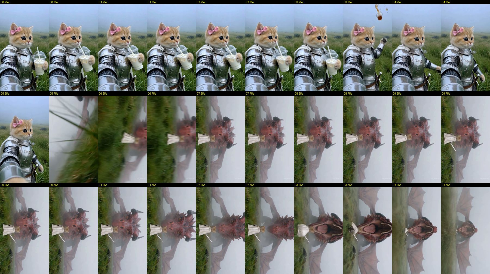